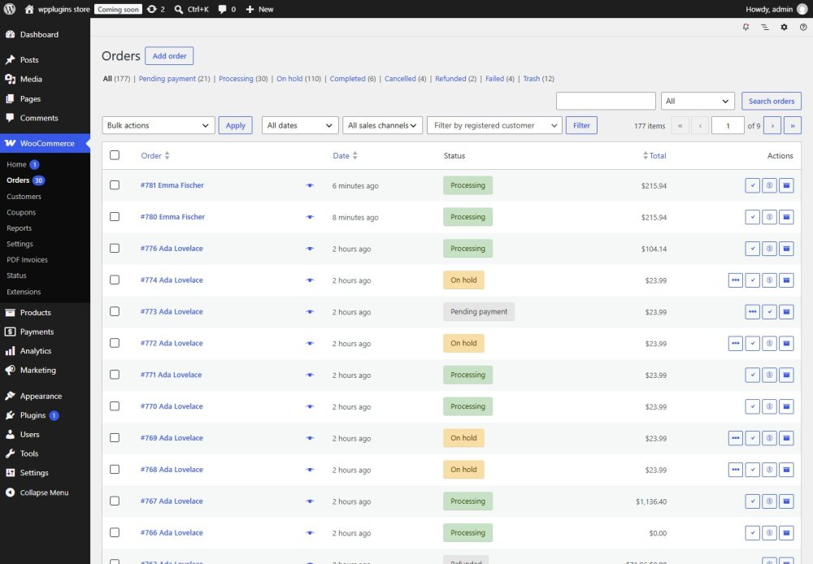

Orders, emails & downloads
Where you find the documents in the admin, how they are attached to emails and how customers download them.
Order screen
The PDF Invoices & Packing Slips box shows the invoice number and date (or "Not issued yet") with buttons for the invoice and the packing slip. When the order status does not allow an invoice, the box says so.
Orders list and bulk actions
The Actions column has invoice and packing slip buttons. Select orders and choose PDF: Invoice or PDF: Packing Slip in Bulk actions to create one PDF for all of them (up to 50 orders). Orders that are not eligible (for example failed orders) are listed with the reason, and you can open the PDF for the others.

Email attachments
Choose the emails on the Email tab. The invoice is only attached when the order status allows an invoice; if the order has no invoice yet, it is issued when the email is sent (once — later emails reuse the same number). The temporary PDF file is deleted right after the email was sent.
Customer downloads
- My Account — a download action in the orders list and a button on the order details, once an invoice exists.
- Guests — a signed link on the order received page and in the order tracking result. The link only works for that order and expires (72 hours by default).
- An order number or order ID alone never gives access. Packing slips are never available to customers.